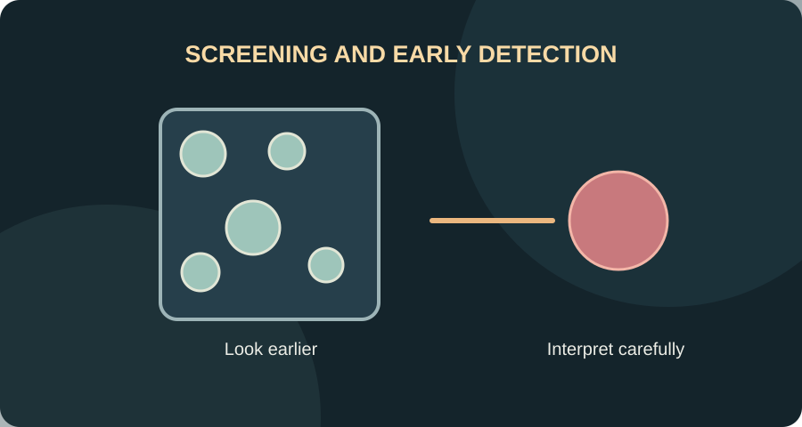

Cancer prevention faces a new question
By the time scientists had established the dangers of cigarettes, epidemiology had shown remarkable power. Compare people who develop cancer with those who do not, investigate their exposures, and look for patterns: this method had uncovered major hazards.
But Siddhartha Mukherjee points out a limitation. Researchers often need a clue before they can ask the right question. If no one suspects an exposure, it may never appear on a questionnaire. Doll and Hill had asked about smoking partly because previous observers had already raised the possibility.
Could scientists identify dangerous substances without waiting for people to develop cancer? And could they discover why such different agents caused malignant growth?
Two examples: asbestos and DES
In the early 1970s, investigators found that mesothelioma, a rare cancer involving the lining of internal organs, occurred disproportionately in people who had worked with asbestos. Insulation workers, shipyard workers, and others shared the relevant occupational exposure. Once the pattern was recognized, limiting asbestos exposure became a prevention strategy.
A second discovery was more surprising. Diethylstilbestrol (DES) was a synthetic estrogen prescribed to some pregnant women in the 1950s. Later, unusual reproductive-tract cancers appeared among daughters who had been exposed to the medication before birth.
These examples stretched the idea of a carcinogen: one was an industrial material, the other a medicine that could affect the next generation. Cancer prevention could no longer focus on one familiar hazard.
Bruce Ames approaches the problem through bacteria
At the University of California, Berkeley, Bruce Ames studied genetic changes in bacteria. He noticed that a mutation could switch a bacterium's ability to grow under certain conditions on or off.
Imagine a strain of bacteria that cannot grow on a particular laboratory medium because an essential genetic function is disabled. If a new mutation restores that function, the bacterium can multiply and form a visible colony.
This suggests a simple measurement: expose bacteria to a chemical and count how many colonies appear because mutations restored growth. More such colonies may mean the chemical is better at causing mutations.
The Ames test: making mutations visible
The Ames test is a laboratory method for detecting whether a substance can cause genetic mutations. It uses specially prepared bacterial strains and measures the frequency of mutation-related growth.
For example, imagine that an untreated sample produces five colonies and a treated sample produces fifty. That difference would suggest that the chemical substantially increased mutation frequency in that experiment.
The example is illustrative, not a result from a specific study in the book. What matters is the concept: an invisible change in DNA can be translated into something researchers can count.
This resembles Farber's decision to study leukemia because malignant blood cells could be measured.
Why mutagens became important to cancer research
Ames found that many known carcinogens also caused mutations in his bacterial system. Substances such as certain dyes and chemical compounds produced positive results. Components of cigarette smoke also behaved as mutagens.
This suggested a critical connection: chemicals that damage or alter genetic information can help initiate cancer. The test did not reveal the full genetic mechanism of malignancy, but it provided a bridge between external exposures and internal cellular changes.
Not all carcinogens behave the same way. Asbestos and DES, for example, did not show the same clear positive results in the test. So the Ames test could not become a universal cancer detector. Its value was powerful but limited.
A test is not the same as a complete explanation
A positive mutagenicity test indicates that a substance can produce certain genetic changes in the test conditions. It does not automatically tell us how much cancer risk a person faces at every possible exposure.
Dose, route of exposure, human metabolism, tissue type, and the mechanism of injury all matter. Conversely, a negative result in one bacterial assay does not prove that an agent is harmless.
Mukherjee uses Ames's work to show the difference between discovering a useful biological clue and possessing a complete, general theory of carcinogenesis.

Baruch Blumberg searches for inherited differences
Another researcher, Baruch Blumberg, approached disease through human population differences. He studied proteins found in blood, hoping that variations among groups would help reveal inherited susceptibility to illness.
In his work, he identified a blood marker he called the Australia antigen, because it appeared in samples from some Aboriginal Australians and other populations. Initially, he suspected it reflected an inherited characteristic.
But then a patient who had previously tested negative became positive for the antigen and developed hepatitis. A truly inherited marker should not suddenly appear after a new illness. The observation forced Blumberg to reconsider his explanation.
The Australia antigen leads to hepatitis B
Blumberg's marker proved to be associated with hepatitis B virus (HBV), not simply a variation in a human gene. It marked infection with a virus capable of causing serious liver disease.
Persistent HBV infection can produce chronic liver inflammation. Over years, repeated injury and repair may scar the liver—a process associated with cirrhosis—and increase the risk of liver cancer.
This was a striking departure from the familiar image of carcinogens as toxic industrial chemicals. An infectious agent could contribute to cancer, and the harm might involve a prolonged cycle of inflammation and tissue repair.
A virus opens the door to cancer prevention
Once researchers could detect HBV infection, they could work to prevent its transmission. Blumberg's group helped develop an HBV vaccine; the book describes progress toward vaccination by 1979.
The logic is simple but profound:
- Identify an infectious cause of disease.
- Develop ways to detect the infection.
- Reduce transmission or prevent infection.
- Lower the future risk of the cancers linked to that infection.
A vaccine is not a treatment for an already established liver tumor. It works earlier by reducing the chance that the dangerous chain of events begins.
Could bacteria also contribute to cancer?
Mukherjee next turns to the stomach. For many years, gastritis and ulcers were often blamed on emotional stress, personality, or excessive stomach acid. The stomach was considered too acidic for bacteria to survive in large numbers.
Yet Australian pathologist Robin Warren repeatedly observed unusual spiral-shaped organisms in samples from patients with inflamed stomach linings. Other doctors doubted the finding.
A young physician named Barry Marshall joined Warren to investigate. Their idea seemed strange because it challenged what physicians had long treated as common knowledge: bacteria supposedly could not be important residents of the stomach.
An Easter weekend changes the experiment (1982)
Marshall tried to grow the suspected bacteria in laboratory dishes. Repeated attempts failed. Ordinarily, the cultures were discarded after a short period because nothing visible had grown.
During a busy Easter weekend in 1982, some plates remained in the incubator longer than usual. When Marshall returned, he saw small bacterial colonies. The organisms had simply needed more time to grow.
Warren and Marshall identified the bacterium now called Helicobacter pylori (H. pylori). Its discovery changed the understanding of gastritis and peptic ulcers.
Notice the lesson: an unsuccessful experiment may reflect the wrong laboratory conditions, not the absence of the thing being sought.

Barry Marshall experiments on himself (1984)
Many researchers remained skeptical that the bacterium actually caused stomach inflammation. Association alone was not enough to persuade them.
In July 1984, Marshall took an extraordinary step: he drank a preparation containing the bacteria. He later developed nausea, vomiting, and symptoms of acute gastritis. Medical examinations documented inflammation and the organism in his stomach.
This was a dramatic attempt to demonstrate causality directly. It was scientifically influential but also personally risky. The episode should be understood as historical evidence, not as a model for safe experimentation.
Antibiotics and the timing of prevention
Once H. pylori was established as a cause of stomach inflammation, researchers developed combinations of medicines capable of treating the infection. Studies also linked chronic H. pylori infection to increased stomach-cancer risk.
But timing proved important. Treating an infection early may prevent years of inflammation and reduce future cancer risk. Treating it after longstanding tissue damage and precancerous changes have developed may not fully reverse that risk.
This connects back to Auerbach's idea of cancer developing gradually through stages. Prevention is often most effective before the biological process becomes too advanced.
So many causes—what do they share?
The list now seems bewildering: soot, tobacco, asbestos, DES, certain chemicals, hepatitis B virus, and H. pylori. Some cause DNA mutations directly; others involve hormonal effects, chronic inflammation, or different mechanisms.
They do not all enter the body the same way, damage the same tissue, or act over the same time span. Yet the outcome can be abnormal cellular growth.
The central scientific challenge is therefore deeper than simply making a list of carcinogens. What must change inside a cell for such different causes to produce cancer? This question prepares the reader for Part Five's examination of genes and cancer biology.
Important concepts compared
| Discovery | Main insight | Possible prevention route |
|---|---|---|
| Asbestos and mesothelioma | Occupational exposure can drive a characteristic cancer | Reduce hazardous exposure |
| DES and daughters' cancers | Prenatal exposure can influence cancer much later | Avoid harmful exposure during pregnancy |
| Ames test | Many cancer-causing chemicals can also cause mutations | Identify and assess hazardous substances |
| Hepatitis B | A persistent viral infection increases liver-cancer risk | Vaccination and infection prevention |
| H. pylori | A bacterium can cause chronic gastritis and increase cancer risk | Detect and treat infection when appropriate |
The deeper meaning and final takeaway
The chapter's title captures the scientific surprise: every newly discovered cause seems stranger than the last. But this confusion is productive. Researchers are gradually realizing that cancer cannot be explained by a single external poison.
The deeper question is not only which exposures cause cancer, but how different exposures interfere with the cell's controls on growth, repair, survival, and division. Discovering causes gives us ways to prevent disease; understanding the common biology may eventually reveal more general methods of treatment.